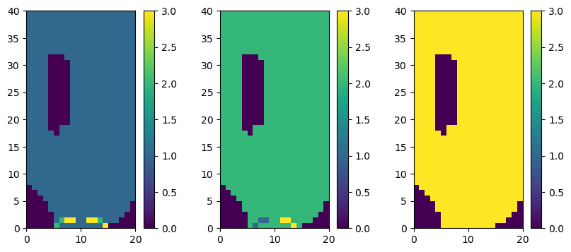
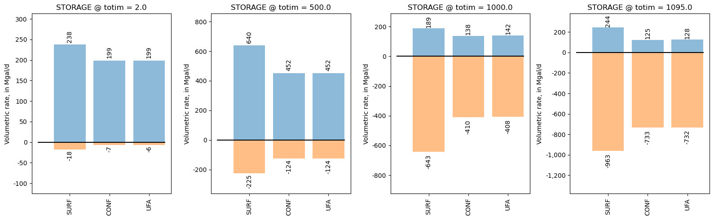
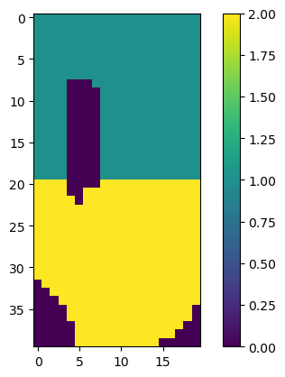

Note
ZoneBudget Example
This notebook demonstrates how to use the ZoneBudget class to extract budget information from the cell by cell budget file using an array of zones.
First set the path and import the required packages. The flopy path doesn’t have to be set if you install flopy from a binary installer. If you want to run this notebook, you have to set the path to your own flopy path.
[1]:
import sys
from pathlib import Path
from tempfile import TemporaryDirectory
import numpy as np
import matplotlib as mpl
import matplotlib.pyplot as plt
import pandas as pd
proj_root = Path.cwd().parent.parent
# run installed version of flopy or add local path
try:
import flopy
except:
sys.path.append(proj_root)
import flopy
print(sys.version)
print("numpy version: {}".format(np.__version__))
print("matplotlib version: {}".format(mpl.__version__))
print("pandas version: {}".format(pd.__version__))
print("flopy version: {}".format(flopy.__version__))
3.10.10 | packaged by conda-forge | (main, Mar 24 2023, 20:08:06) [GCC 11.3.0]
numpy version: 1.24.3
matplotlib version: 3.7.1
pandas version: 2.0.1
flopy version: 3.3.7
[2]:
# temporary workspace
temp_dir = TemporaryDirectory()
workspace = Path(temp_dir.name)
# Set path to example datafiles
loadpth = proj_root / "examples" / "data" / "zonbud_examples"
cbc_f = loadpth / "freyberg.gitcbc"
Read File Containing Zones
Using the ZoneBudget.read_zone_file() utility, we can import zonebudget-style array files.
[3]:
from flopy.utils import ZoneBudget
zone_file = loadpth / "zonef_mlt.zbr"
zon = ZoneBudget.read_zone_file(zone_file)
nlay, nrow, ncol = zon.shape
fig = plt.figure(figsize=(10, 4))
for lay in range(nlay):
ax = fig.add_subplot(1, nlay, lay + 1)
im = ax.pcolormesh(zon[lay, ::-1, :])
cbar = plt.colorbar(im)
plt.gca().set_aspect("equal")
plt.show()

Extract Budget Information from ZoneBudget Object
At the core of the ZoneBudget object is a numpy structured array. The class provides some wrapper functions to help us interogate the array and save it to disk.
[4]:
# Create a ZoneBudget object and get the budget record array
zb = flopy.utils.ZoneBudget(cbc_f, zon, kstpkper=(0, 1096))
zb.get_budget()
[4]:
array([(1097., 0, 1096, 'FROM_STORAGE', 0., 0.0000000e+00, 0.0000000e+00, 0.0000000e+00),
(1097., 0, 1096, 'FROM_CONSTANT_HEAD', 0., 0.0000000e+00, 2.3156659e+02, 8.6217201e+01),
(1097., 0, 1096, 'FROM_WELLS', 0., 0.0000000e+00, 0.0000000e+00, 0.0000000e+00),
(1097., 0, 1096, 'FROM_DRAINS', 0., 0.0000000e+00, 0.0000000e+00, 0.0000000e+00),
(1097., 0, 1096, 'FROM_RECHARGE', 0., 5.1455815e+03, 1.4936376e+01, 2.9872751e+01),
(1097., 0, 1096, 'FROM_ZONE_0', 0., 0.0000000e+00, 0.0000000e+00, 0.0000000e+00),
(1097., 0, 1096, 'FROM_ZONE_1', 0., 0.0000000e+00, 3.4751235e+03, 1.3860045e+02),
(1097., 0, 1096, 'FROM_ZONE_2', 0., 3.2693188e+03, 0.0000000e+00, 1.7646553e+03),
(1097., 0, 1096, 'FROM_ZONE_3', 0., 1.9218604e+02, 1.5280482e+03, 0.0000000e+00),
(1097., 0, 1096, 'TOTAL_IN', 0., 8.6070859e+03, 5.2496748e+03, 2.0193457e+03),
(1097., 0, 1096, 'TO_STORAGE', 0., 0.0000000e+00, 0.0000000e+00, 0.0000000e+00),
(1097., 0, 1096, 'TO_CONSTANT_HEAD', 0., 2.3054836e+02, 2.1570151e+02, 2.9911380e+02),
(1097., 0, 1096, 'TO_WELLS', 0., 4.7627998e+03, 0.0000000e+00, 0.0000000e+00),
(1097., 0, 1096, 'TO_DRAINS', 0., 0.0000000e+00, 0.0000000e+00, 0.0000000e+00),
(1097., 0, 1096, 'TO_RECHARGE', 0., 0.0000000e+00, 0.0000000e+00, 0.0000000e+00),
(1097., 0, 1096, 'TO_ZONE_0', 0., 0.0000000e+00, 0.0000000e+00, 0.0000000e+00),
(1097., 0, 1096, 'TO_ZONE_1', 0., 0.0000000e+00, 3.2693188e+03, 1.9218604e+02),
(1097., 0, 1096, 'TO_ZONE_2', 0., 3.4751235e+03, 0.0000000e+00, 1.5280482e+03),
(1097., 0, 1096, 'TO_ZONE_3', 0., 1.3860045e+02, 1.7646553e+03, 0.0000000e+00),
(1097., 0, 1096, 'TOTAL_OUT', 0., 8.6070723e+03, 5.2496758e+03, 2.0193480e+03),
(1097., 0, 1096, 'IN-OUT', 0., 1.3671875e-02, 9.7656250e-04, 2.3193359e-03),
(1097., 0, 1096, 'PERCENT_DISCREPANCY', nan, 1.5884454e-04, 1.8602341e-05, 1.1485574e-04)],
dtype=[('totim', '<f4'), ('time_step', '<i4'), ('stress_period', '<i4'), ('name', '<U50'), ('ZONE_0', '<f4'), ('ZONE_1', '<f4'), ('ZONE_2', '<f4'), ('ZONE_3', '<f4')])
[5]:
# Get a list of the unique budget record names
zb.get_record_names()
[5]:
array(['FROM_CONSTANT_HEAD', 'FROM_DRAINS', 'FROM_RECHARGE',
'FROM_STORAGE', 'FROM_WELLS', 'FROM_ZONE_0', 'FROM_ZONE_1',
'FROM_ZONE_2', 'FROM_ZONE_3', 'IN-OUT', 'PERCENT_DISCREPANCY',
'TOTAL_IN', 'TOTAL_OUT', 'TO_CONSTANT_HEAD', 'TO_DRAINS',
'TO_RECHARGE', 'TO_STORAGE', 'TO_WELLS', 'TO_ZONE_0', 'TO_ZONE_1',
'TO_ZONE_2', 'TO_ZONE_3'], dtype='<U50')
[6]:
# Look at a subset of fluxes
names = ["FROM_RECHARGE", "FROM_ZONE_1", "FROM_ZONE_3"]
zb.get_budget(names=names)
[6]:
array([(1097., 0, 1096, 'FROM_RECHARGE', 0., 5145.5815 , 14.936376, 29.872751),
(1097., 0, 1096, 'FROM_ZONE_1', 0., 0. , 3475.1235 , 138.60045 ),
(1097., 0, 1096, 'FROM_ZONE_3', 0., 192.18604, 1528.0482 , 0. )],
dtype=[('totim', '<f4'), ('time_step', '<i4'), ('stress_period', '<i4'), ('name', '<U50'), ('ZONE_0', '<f4'), ('ZONE_1', '<f4'), ('ZONE_2', '<f4'), ('ZONE_3', '<f4')])
[7]:
# Look at fluxes in from zone 2
names = ["FROM_RECHARGE", "FROM_ZONE_1", "FROM_ZONE_3"]
zones = ["ZONE_2"]
zb.get_budget(names=names, zones=zones)
[7]:
array([(1097., 0, 1096, 'FROM_RECHARGE', 14.936376),
(1097., 0, 1096, 'FROM_ZONE_1', 3475.1235 ),
(1097., 0, 1096, 'FROM_ZONE_3', 1528.0482 )],
dtype={'names': ['totim', 'time_step', 'stress_period', 'name', 'ZONE_2'], 'formats': ['<f4', '<i4', '<i4', '<U50', '<f4'], 'offsets': [0, 4, 8, 12, 220], 'itemsize': 228})
[8]:
# Look at all of the mass-balance records
names = ["TOTAL_IN", "TOTAL_OUT", "IN-OUT", "PERCENT_DISCREPANCY"]
zb.get_budget(names=names)
[8]:
array([(1097., 0, 1096, 'TOTAL_IN', 0., 8.6070859e+03, 5.249675e+03, 2.0193457e+03),
(1097., 0, 1096, 'TOTAL_OUT', 0., 8.6070723e+03, 5.249676e+03, 2.0193480e+03),
(1097., 0, 1096, 'IN-OUT', 0., 1.3671875e-02, 9.765625e-04, 2.3193359e-03),
(1097., 0, 1096, 'PERCENT_DISCREPANCY', nan, 1.5884454e-04, 1.860234e-05, 1.1485574e-04)],
dtype=[('totim', '<f4'), ('time_step', '<i4'), ('stress_period', '<i4'), ('name', '<U50'), ('ZONE_0', '<f4'), ('ZONE_1', '<f4'), ('ZONE_2', '<f4'), ('ZONE_3', '<f4')])
Convert Units
The ZoneBudget class supports the use of mathematical operators and returns a new copy of the object.
[9]:
cmd = flopy.utils.ZoneBudget(cbc_f, zon, kstpkper=(0, 0))
cfd = cmd / 35.3147
inyr = (cfd / (250 * 250)) * 365 * 12
cmdbud = cmd.get_budget()
cfdbud = cfd.get_budget()
inyrbud = inyr.get_budget()
names = ["FROM_RECHARGE"]
rowidx = np.in1d(cmdbud["name"], names)
colidx = "ZONE_1"
print("{:,.1f} cubic meters/day".format(cmdbud[rowidx][colidx][0]))
print("{:,.1f} cubic feet/day".format(cfdbud[rowidx][colidx][0]))
print("{:,.1f} inches/year".format(inyrbud[rowidx][colidx][0]))
6,222.7 cubic meters/day
176.2 cubic feet/day
12.3 inches/year
[10]:
cmd is cfd
[10]:
False
Alias Names
A dictionary of {zone: “alias”} pairs can be passed to replace the typical “ZONE_X” fieldnames of the ZoneBudget structured array with more descriptive names.
[11]:
aliases = {1: "SURF", 2: "CONF", 3: "UFA"}
zb = flopy.utils.ZoneBudget(cbc_f, zon, totim=[1097.0], aliases=aliases)
zb.get_budget()
[11]:
array([(1097., 0, 1096, 'FROM_STORAGE', 0., 0.0000000e+00, 0.0000000e+00, 0.0000000e+00),
(1097., 0, 1096, 'FROM_CONSTANT_HEAD', 0., 0.0000000e+00, 2.3156659e+02, 8.6217201e+01),
(1097., 0, 1096, 'FROM_WELLS', 0., 0.0000000e+00, 0.0000000e+00, 0.0000000e+00),
(1097., 0, 1096, 'FROM_DRAINS', 0., 0.0000000e+00, 0.0000000e+00, 0.0000000e+00),
(1097., 0, 1096, 'FROM_RECHARGE', 0., 5.1455815e+03, 1.4936376e+01, 2.9872751e+01),
(1097., 0, 1096, 'FROM_ZONE_0', 0., 0.0000000e+00, 0.0000000e+00, 0.0000000e+00),
(1097., 0, 1096, 'FROM_SURF', 0., 0.0000000e+00, 3.4751235e+03, 1.3860045e+02),
(1097., 0, 1096, 'FROM_CONF', 0., 3.2693188e+03, 0.0000000e+00, 1.7646553e+03),
(1097., 0, 1096, 'FROM_UFA', 0., 1.9218604e+02, 1.5280482e+03, 0.0000000e+00),
(1097., 0, 1096, 'TOTAL_IN', 0., 8.6070859e+03, 5.2496748e+03, 2.0193457e+03),
(1097., 0, 1096, 'TO_STORAGE', 0., 0.0000000e+00, 0.0000000e+00, 0.0000000e+00),
(1097., 0, 1096, 'TO_CONSTANT_HEAD', 0., 2.3054836e+02, 2.1570151e+02, 2.9911380e+02),
(1097., 0, 1096, 'TO_WELLS', 0., 4.7627998e+03, 0.0000000e+00, 0.0000000e+00),
(1097., 0, 1096, 'TO_DRAINS', 0., 0.0000000e+00, 0.0000000e+00, 0.0000000e+00),
(1097., 0, 1096, 'TO_RECHARGE', 0., 0.0000000e+00, 0.0000000e+00, 0.0000000e+00),
(1097., 0, 1096, 'TO_ZONE_0', 0., 0.0000000e+00, 0.0000000e+00, 0.0000000e+00),
(1097., 0, 1096, 'TO_SURF', 0., 0.0000000e+00, 3.2693188e+03, 1.9218604e+02),
(1097., 0, 1096, 'TO_CONF', 0., 3.4751235e+03, 0.0000000e+00, 1.5280482e+03),
(1097., 0, 1096, 'TO_UFA', 0., 1.3860045e+02, 1.7646553e+03, 0.0000000e+00),
(1097., 0, 1096, 'TOTAL_OUT', 0., 8.6070723e+03, 5.2496758e+03, 2.0193480e+03),
(1097., 0, 1096, 'IN-OUT', 0., 1.3671875e-02, 9.7656250e-04, 2.3193359e-03),
(1097., 0, 1096, 'PERCENT_DISCREPANCY', nan, 1.5884454e-04, 1.8602341e-05, 1.1485574e-04)],
dtype=[('totim', '<f4'), ('time_step', '<i4'), ('stress_period', '<i4'), ('name', '<U50'), ('ZONE_0', '<f4'), ('SURF', '<f4'), ('CONF', '<f4'), ('UFA', '<f4')])
Return the Budgets as a Pandas DataFrame
Set kstpkper and totim keyword args to None (or omit) to return all times. The get_dataframes() method will return a DataFrame multi-indexed on totim and name.
[12]:
aliases = {1: "SURF", 2: "CONF", 3: "UFA"}
times = list(range(1092, 1097 + 1))
zb = flopy.utils.ZoneBudget(cbc_f, zon, totim=times, aliases=aliases)
zb.get_dataframes()
[12]:
| ZONE_0 | SURF | CONF | UFA | ||
|---|---|---|---|---|---|
| totim | name | ||||
| 1092.0 | FROM_STORAGE | 0.0 | 393.480286 | 230.476242 | 228.273621 |
| FROM_CONSTANT_HEAD | 0.0 | 0.000000 | 13.225761 | 5.042325 | |
| FROM_WELLS | 0.0 | 0.000000 | 0.000000 | 0.000000 | |
| FROM_DRAINS | 0.0 | 0.000000 | 0.000000 | 0.000000 | |
| FROM_RECHARGE | 0.0 | 6018.483887 | 17.470200 | 34.940399 | |
| ... | ... | ... | ... | ... | ... |
| 1097.0 | TO_CONF | 0.0 | 3475.123535 | 0.000000 | 1528.048218 |
| TO_UFA | 0.0 | 138.600449 | 1764.655273 | 0.000000 | |
| TOTAL_OUT | 0.0 | 8607.072266 | 5249.675781 | 2019.348022 | |
| IN-OUT | 0.0 | 0.013672 | 0.000977 | 0.002319 | |
| PERCENT_DISCREPANCY | NaN | 0.000159 | 0.000019 | 0.000115 |
132 rows × 4 columns
Slice the multi-index dataframe to retrieve a subset of the budget. NOTE: We can pass “names” directly to the get_dataframes() method to return a subset of reocrds. By omitting the "FROM_" or "TO_" prefix we get both.
[13]:
dateidx1 = 1095.0
dateidx2 = 1097.0
names = ["FROM_RECHARGE", "TO_WELLS", "CONSTANT_HEAD"]
zones = ["SURF", "CONF"]
df = zb.get_dataframes(names=names)
df.loc[(slice(dateidx1, dateidx2), slice(None)), :][zones]
[13]:
| SURF | CONF | ||
|---|---|---|---|
| totim | name | ||
| 1095.0 | FROM_CONSTANT_HEAD | 0.000000 | 14.531923 |
| FROM_RECHARGE | 5010.149414 | 14.543249 | |
| TO_CONSTANT_HEAD | 664.912598 | 493.175781 | |
| TO_WELLS | 794.582886 | 0.000000 | |
| 1096.0 | FROM_CONSTANT_HEAD | 0.000000 | 6.501888 |
| FROM_RECHARGE | 6115.663086 | 17.752289 | |
| TO_CONSTANT_HEAD | 690.230591 | 511.618652 | |
| TO_WELLS | 1373.782715 | 0.000000 | |
| 1097.0 | FROM_CONSTANT_HEAD | 0.000000 | 231.566589 |
| FROM_RECHARGE | 5145.581543 | 14.936376 | |
| TO_CONSTANT_HEAD | 230.548355 | 215.701508 | |
| TO_WELLS | 4762.799805 | 0.000000 |
Look at pumpage (TO_WELLS) as a percentage of recharge (FROM_RECHARGE)
[14]:
dateidx1 = 1095.0
dateidx2 = 1097.0
zones = ["SURF"]
# Pull out the individual records of interest
rech = df.loc[(slice(dateidx1, dateidx2), ["FROM_RECHARGE"]), :][zones]
pump = df.loc[(slice(dateidx1, dateidx2), ["TO_WELLS"]), :][zones]
# Remove the "record" field from the index so we can
# take the difference of the two DataFrames
rech = rech.reset_index()
rech = rech.set_index(["totim"])
rech = rech[zones]
pump = pump.reset_index()
pump = pump.set_index(["totim"])
pump = pump[zones] * -1
# Compute pumping as a percentage of recharge
(pump / rech) * 100.0
[14]:
| SURF | |
|---|---|
| totim | |
| 1095.0 | -15.859466 |
| 1096.0 | -22.463348 |
| 1097.0 | -92.560966 |
Pass start_datetime and timeunit keyword arguments to return a dataframe with a datetime multi-index
[15]:
dateidx1 = pd.Timestamp("1972-12-29")
dateidx2 = pd.Timestamp("1972-12-30")
names = ["FROM_RECHARGE", "TO_WELLS", "CONSTANT_HEAD"]
zones = ["SURF", "CONF"]
df = zb.get_dataframes(start_datetime="1970-01-01", timeunit="D", names=names)
df.loc[(slice(dateidx1, dateidx2), slice(None)), :][zones]
[15]:
| SURF | CONF | ||
|---|---|---|---|
| datetime | name | ||
| 1972-12-29 | FROM_CONSTANT_HEAD | 0.000000 | 16.905813 |
| FROM_RECHARGE | 4203.679199 | 12.202263 | |
| TO_CONSTANT_HEAD | 655.814514 | 487.094849 | |
| TO_WELLS | 1930.483154 | 0.000000 | |
| 1972-12-30 | FROM_CONSTANT_HEAD | 0.000000 | 18.877954 |
| FROM_RECHARGE | 4047.502441 | 11.748919 | |
| TO_CONSTANT_HEAD | 650.441589 | 482.853638 | |
| TO_WELLS | 1279.166382 | 0.000000 |
Pass index_key to indicate which fields to use in the multi-index (default is “totim”; valid keys are “totim” and “kstpkper”)
[16]:
df = zb.get_dataframes(index_key="kstpkper")
df.head()
[16]:
| ZONE_0 | SURF | CONF | UFA | |||
|---|---|---|---|---|---|---|
| time_step | stress_period | name | ||||
| 0 | 1091 | FROM_STORAGE | 0.0 | 393.480286 | 230.476242 | 228.273621 |
| FROM_CONSTANT_HEAD | 0.0 | 0.000000 | 13.225761 | 5.042325 | ||
| FROM_WELLS | 0.0 | 0.000000 | 0.000000 | 0.000000 | ||
| FROM_DRAINS | 0.0 | 0.000000 | 0.000000 | 0.000000 | ||
| FROM_RECHARGE | 0.0 | 6018.483887 | 17.470200 | 34.940399 |
Write Budget Output to CSV
We can write the resulting recarray to a csv file with the .to_csv() method of the ZoneBudget object.
[17]:
zb = flopy.utils.ZoneBudget(cbc_f, zon, kstpkper=[(0, 0), (0, 1096)])
f_out = workspace / "Example_output.csv"
zb.to_csv(f_out)
# Read the file in to see the contents
try:
import pandas as pd
print(pd.read_csv(f_out).to_string(index=False))
except:
with open(f_out, "r") as f:
for line in f.readlines():
print("\t".join(line.split(",")))
totim time_step stress_period name ZONE_0 ZONE_1 ZONE_2 ZONE_3
1.0 0 0 FROM_STORAGE 0.0 0.000000 0.000000 0.000000
1.0 0 0 FROM_CONSTANT_HEAD 0.0 0.000000 0.000000 0.000000
1.0 0 0 FROM_WELLS 0.0 0.000000 0.000000 0.000000
1.0 0 0 FROM_DRAINS 0.0 0.000000 0.000000 0.000000
1.0 0 0 FROM_RECHARGE 0.0 6222.673300 18.062912 36.125824
1.0 0 0 FROM_ZONE_0 0.0 0.000000 0.000000 0.000000
1.0 0 0 FROM_ZONE_1 0.0 0.000000 4275.257300 491.945070
1.0 0 0 FROM_ZONE_2 0.0 2744.821800 0.000000 2115.654000
1.0 0 0 FROM_ZONE_3 0.0 451.545720 1215.952300 0.000000
1.0 0 0 TOTAL_IN 0.0 9419.041000 5509.272500 2643.725000
1.0 0 0 TO_STORAGE 0.0 0.000000 0.000000 0.000000
1.0 0 0 TO_CONSTANT_HEAD 0.0 821.283200 648.806100 976.233600
1.0 0 0 TO_WELLS 0.0 0.000000 0.000000 0.000000
1.0 0 0 TO_DRAINS 0.0 3832.150000 0.000000 0.000000
1.0 0 0 TO_RECHARGE 0.0 0.000000 0.000000 0.000000
1.0 0 0 TO_ZONE_0 0.0 0.000000 0.000000 0.000000
1.0 0 0 TO_ZONE_1 0.0 0.000000 2744.821800 451.545720
1.0 0 0 TO_ZONE_2 0.0 4275.257300 0.000000 1215.952300
1.0 0 0 TO_ZONE_3 0.0 491.945070 2115.654000 0.000000
1.0 0 0 TOTAL_OUT 0.0 9420.636000 5509.282000 2643.731400
1.0 0 0 IN-OUT 0.0 1.594727 0.009766 0.006348
1.0 0 0 PERCENT_DISCREPANCY NaN 0.016929 0.000177 0.000240
1097.0 0 1096 FROM_STORAGE 0.0 0.000000 0.000000 0.000000
1097.0 0 1096 FROM_CONSTANT_HEAD 0.0 0.000000 231.566590 86.217200
1097.0 0 1096 FROM_WELLS 0.0 0.000000 0.000000 0.000000
1097.0 0 1096 FROM_DRAINS 0.0 0.000000 0.000000 0.000000
1097.0 0 1096 FROM_RECHARGE 0.0 5145.581500 14.936376 29.872751
1097.0 0 1096 FROM_ZONE_0 0.0 0.000000 0.000000 0.000000
1097.0 0 1096 FROM_ZONE_1 0.0 0.000000 3475.123500 138.600450
1097.0 0 1096 FROM_ZONE_2 0.0 3269.318800 0.000000 1764.655300
1097.0 0 1096 FROM_ZONE_3 0.0 192.186040 1528.048200 0.000000
1097.0 0 1096 TOTAL_IN 0.0 8607.086000 5249.675000 2019.345700
1097.0 0 1096 TO_STORAGE 0.0 0.000000 0.000000 0.000000
1097.0 0 1096 TO_CONSTANT_HEAD 0.0 230.548360 215.701500 299.113800
1097.0 0 1096 TO_WELLS 0.0 4762.800000 0.000000 0.000000
1097.0 0 1096 TO_DRAINS 0.0 0.000000 0.000000 0.000000
1097.0 0 1096 TO_RECHARGE 0.0 0.000000 0.000000 0.000000
1097.0 0 1096 TO_ZONE_0 0.0 0.000000 0.000000 0.000000
1097.0 0 1096 TO_ZONE_1 0.0 0.000000 3269.318800 192.186040
1097.0 0 1096 TO_ZONE_2 0.0 3475.123500 0.000000 1528.048200
1097.0 0 1096 TO_ZONE_3 0.0 138.600450 1764.655300 0.000000
1097.0 0 1096 TOTAL_OUT 0.0 8607.072000 5249.676000 2019.348000
1097.0 0 1096 IN-OUT 0.0 0.013672 0.000977 0.002319
1097.0 0 1096 PERCENT_DISCREPANCY NaN 0.000159 0.000019 0.000115
Net Budget
Using the “net” keyword argument, we can request a net budget for each zone/record name or for a subset of zones and record names. Note that we can identify the record names we want without the added "_IN" or "_OUT" string suffix.
[18]:
zon = np.ones((nlay, nrow, ncol), int)
zon[1, :, :] = 2
zon[2, :, :] = 3
aliases = {1: "SURF", 2: "CONF", 3: "UFA"}
times = list(range(1092, 1097 + 1))
zb = flopy.utils.ZoneBudget(cbc_f, zon, totim=times, aliases=aliases)
zb.get_budget(names=["STORAGE", "WELLS"], zones=["SURF", "UFA"], net=True)
[18]:
array([(1092., 0, 1091, 'STORAGE', -386.15085, -425.65155),
(1092., 0, 1091, 'WELLS', -2829.812 , 0. ),
(1093., 0, 1092, 'STORAGE', -12.50354, -151.3594 ),
(1093., 0, 1092, 'WELLS', -1930.4832 , 0. ),
(1094., 0, 1093, 'STORAGE', -198.92935, -270.8744 ),
(1094., 0, 1093, 'WELLS', -1279.1664 , 0. ),
(1095., 0, 1094, 'STORAGE', -718.4885 , -604.8537 ),
(1095., 0, 1094, 'WELLS', -794.5829 , 0. ),
(1096., 0, 1095, 'STORAGE', -855.1075 , -622.88477),
(1096., 0, 1095, 'WELLS', -1373.7827 , 0. ),
(1097., 0, 1096, 'STORAGE', 0. , 0. ),
(1097., 0, 1096, 'WELLS', -4762.8 , 0. )],
dtype={'names': ['totim', 'time_step', 'stress_period', 'name', 'SURF', 'UFA'], 'formats': ['<f4', '<i4', '<i4', '<U50', '<f4', '<f4'], 'offsets': [0, 4, 8, 12, 212, 220], 'itemsize': 224})
[19]:
df = zb.get_dataframes(
names=["STORAGE", "WELLS"], zones=["SURF", "UFA"], net=True
)
df.head(6)
[19]:
| SURF | UFA | ||
|---|---|---|---|
| totim | name | ||
| 1092.0 | STORAGE | -386.150848 | -425.651550 |
| WELLS | -2829.812012 | 0.000000 | |
| 1093.0 | STORAGE | -12.503540 | -151.359406 |
| WELLS | -1930.483154 | 0.000000 | |
| 1094.0 | STORAGE | -198.929352 | -270.874390 |
| WELLS | -1279.166382 | 0.000000 |
Plot Budget Components
The following is a function that can be used to better visualize the budget components using matplotlib.
[20]:
def tick_label_formatter_comma_sep(x, pos):
return "{:,.0f}".format(x)
def volumetric_budget_bar_plot(values_in, values_out, labels, **kwargs):
if "ax" in kwargs:
ax = kwargs.pop("ax")
else:
ax = plt.gca()
x_pos = np.arange(len(values_in))
rects_in = ax.bar(x_pos, values_in, align="center", alpha=0.5)
x_pos = np.arange(len(values_out))
rects_out = ax.bar(x_pos, values_out, align="center", alpha=0.5)
plt.xticks(list(x_pos), labels)
ax.set_xticklabels(ax.xaxis.get_majorticklabels(), rotation=90)
ax.get_yaxis().set_major_formatter(
mpl.ticker.FuncFormatter(tick_label_formatter_comma_sep)
)
ymin, ymax = ax.get_ylim()
if ymax != 0:
if abs(ymin) / ymax < 0.33:
ymin = -(ymax * 0.5)
else:
ymin *= 1.35
else:
ymin *= 1.35
plt.ylim([ymin, ymax * 1.25])
for i, rect in enumerate(rects_in):
label = "{:,.0f}".format(values_in[i])
height = values_in[i]
x = rect.get_x() + rect.get_width() / 2
y = height + (0.02 * ymax)
vertical_alignment = "bottom"
horizontal_alignment = "center"
ax.text(
x,
y,
label,
ha=horizontal_alignment,
va=vertical_alignment,
rotation=90,
)
for i, rect in enumerate(rects_out):
label = "{:,.0f}".format(values_out[i])
height = values_out[i]
x = rect.get_x() + rect.get_width() / 2
y = height + (0.02 * ymin)
vertical_alignment = "top"
horizontal_alignment = "center"
ax.text(
x,
y,
label,
ha=horizontal_alignment,
va=vertical_alignment,
rotation=90,
)
# horizontal line indicating zero
ax.plot(
[
rects_in[0].get_x() - rects_in[0].get_width() / 2,
rects_in[-1].get_x() + rects_in[-1].get_width(),
],
[0, 0],
"k",
)
return rects_in, rects_out
[21]:
fig = plt.figure(figsize=(16, 5))
times = [2.0, 500.0, 1000.0, 1095.0]
for idx, t in enumerate(times):
ax = fig.add_subplot(1, len(times), idx + 1)
zb = flopy.utils.ZoneBudget(
cbc_f, zon, kstpkper=None, totim=t, aliases=aliases
)
recname = "STORAGE"
values_in = zb.get_dataframes(names="FROM_{}".format(recname)).T.squeeze()
values_out = (
zb.get_dataframes(names="TO_{}".format(recname)).T.squeeze() * -1
)
labels = values_in.index.tolist()
rects_in, rects_out = volumetric_budget_bar_plot(
values_in, values_out, labels, ax=ax
)
plt.ylabel("Volumetric rate, in Mgal/d")
plt.title("{} @ totim = {}".format(recname, t))
plt.tight_layout()
plt.show()

Zonebudget for Modflow 6 (ZoneBudget6)
This section shows how to build and run a Zonebudget when working with a MODFLOW 6 model.
First let’s load a model
[22]:
mf6_exe = "mf6"
zb6_exe = "zbud6"
sim_ws = proj_root / "examples" / "data" / "mf6-freyberg"
cpth = workspace / "zbud6"
cpth.mkdir()
sim = flopy.mf6.MFSimulation.load(sim_ws=sim_ws, exe_name=mf6_exe)
sim.simulation_data.mfpath.set_sim_path(cpth)
sim.write_simulation()
success, buff = sim.run_simulation(silent=True, report=True)
assert success, "Failed to run"
for line in buff:
print(line)
loading simulation...
loading simulation name file...
loading tdis package...
loading model gwf6...
loading package dis...
loading package ic...
WARNING: Block "options" is not a valid block name for file type ic.
loading package oc...
loading package npf...
loading package sto...
loading package chd...
loading package riv...
loading package wel...
loading package rch...
loading solution package freyberg...
WARNING: MFFileMgt's set_sim_path has been deprecated. Please use MFSimulation's set_sim_path in the future.
writing simulation...
writing simulation name file...
writing simulation tdis package...
writing solution package freyberg...
writing model freyberg...
writing model name file...
writing package dis...
writing package ic...
writing package oc...
writing package npf...
writing package sto...
writing package chd_0...
writing package riv_0...
writing package wel_0...
writing package rch_0...
MODFLOW 6
U.S. GEOLOGICAL SURVEY MODULAR HYDROLOGIC MODEL
VERSION 6.4.1 Release 12/09/2022
MODFLOW 6 compiled Apr 12 2023 19:02:29 with Intel(R) Fortran Intel(R) 64
Compiler Classic for applications running on Intel(R) 64, Version 2021.7.0
Build 20220726_000000
This software has been approved for release by the U.S. Geological
Survey (USGS). Although the software has been subjected to rigorous
review, the USGS reserves the right to update the software as needed
pursuant to further analysis and review. No warranty, expressed or
implied, is made by the USGS or the U.S. Government as to the
functionality of the software and related material nor shall the
fact of release constitute any such warranty. Furthermore, the
software is released on condition that neither the USGS nor the U.S.
Government shall be held liable for any damages resulting from its
authorized or unauthorized use. Also refer to the USGS Water
Resources Software User Rights Notice for complete use, copyright,
and distribution information.
Run start date and time (yyyy/mm/dd hh:mm:ss): 2023/05/04 15:59:16
Writing simulation list file: mfsim.lst
Using Simulation name file: mfsim.nam
Solving: Stress period: 1 Time step: 1
Run end date and time (yyyy/mm/dd hh:mm:ss): 2023/05/04 15:59:16
Elapsed run time: 0.060 Seconds
Normal termination of simulation.
Use the the .output model attribute to create a zonebudget model
The .output attribute allows the user to access model output and create zonebudget models easily. The user only needs to pass in a zone array to create a zonebudget model!
[23]:
# let's get our idomain array from the model, split it into two zones, and use it as a zone array
ml = sim.get_model("freyberg")
zones = ml.modelgrid.idomain
zones[0, 20:] = np.where(zones[0, 20:] != 0, 2, 0)
plt.imshow(zones[0])
plt.colorbar();

[24]:
# now let's build a zonebudget model and run it!
zonbud = ml.output.zonebudget(zones)
zonbud.change_model_ws(cpth)
zonbud.write_input()
success, buff = zonbud.run_model(exe_name=zb6_exe, silent=True)
Getting the zonebudget output
We can then get the output as a recarray using the .get_budget() method or as a pandas dataframe using the .get_dataframes() method.
[25]:
zonbud.get_budget()
[25]:
rec.array([(10., 0, 0, 'STO_SS_IN', 0. , 0. ),
(10., 0, 0, 'STO_SY_IN', 0. , 0. ),
(10., 0, 0, 'DATA_SPDIS_IN', 0. , 0. ),
(10., 0, 0, 'WEL_IN', 0. , 0. ),
(10., 0, 0, 'RIV_IN', 0.00419403, 0. ),
(10., 0, 0, 'RCHA_IN', 0.0353 , 0.0342 ),
(10., 0, 0, 'CHD_IN', 0. , 0.00017814),
(10., 0, 0, 'STO_SS_OUT', 0. , 0. ),
(10., 0, 0, 'STO_SY_OUT', 0. , 0. ),
(10., 0, 0, 'DATA_SPDIS_OUT', 0. , 0. ),
(10., 0, 0, 'WEL_OUT', 0.0162 , 0.00585 ),
(10., 0, 0, 'RIV_OUT', 0.02102198, 0.02637233),
(10., 0, 0, 'RCHA_OUT', 0. , 0. ),
(10., 0, 0, 'CHD_OUT', 0. , 0.00442785),
(10., 0, 0, 'FROM_ZONE_0', 0. , 0. ),
(10., 0, 0, 'FROM_ZONE_1', 0. , 0.00405829),
(10., 0, 0, 'FROM_ZONE_2', 0.00178624, 0. ),
(10., 0, 0, 'TO_ZONE_0', 0. , 0. ),
(10., 0, 0, 'TO_ZONE_1', 0. , 0.00178624),
(10., 0, 0, 'TO_ZONE_2', 0.00405829, 0. )],
dtype=[('totim', '<f8'), ('time_step', '<i8'), ('stress_period', '<i8'), ('name', 'O'), ('ZONE_1', '<f8'), ('ZONE_2', '<f8')])
[26]:
# get the net flux using net=True flag
zonbud.get_dataframes(net=True)
[26]:
| ZONE_1 | ZONE_2 | ||
|---|---|---|---|
| totim | name | ||
| 10.0 | STO_SS | 0.000000 | 0.000000 |
| STO_SY | 0.000000 | 0.000000 | |
| DATA_SPDIS | 0.000000 | 0.000000 | |
| WEL | -0.016200 | -0.005850 | |
| RIV | -0.016828 | -0.026372 | |
| RCHA | 0.035300 | 0.034200 | |
| CHD | 0.000000 | -0.004250 | |
| ZONE_0 | 0.000000 | 0.000000 | |
| ZONE_1 | 0.000000 | 0.002272 | |
| ZONE_2 | -0.002272 | 0.000000 |
[27]:
# we can also pivot the data into a spreadsheet like format
zonbud.get_dataframes(net=True, pivot=True)
[27]:
| totim | kper | kstp | zone | CHD | DATA_SPDIS | RCHA | RIV | STO_SS | STO_SY | WEL | ZONE_0 | ZONE_1 | ZONE_2 | |
|---|---|---|---|---|---|---|---|---|---|---|---|---|---|---|
| 0 | 10.0 | 0 | 0 | 1 | 0.00000 | 0.0 | 0.0353 | -0.016828 | 0.0 | 0.0 | -0.01620 | 0.0 | 0.000000 | -0.002272 |
| 1 | 10.0 | 0 | 0 | 2 | -0.00425 | 0.0 | 0.0342 | -0.026372 | 0.0 | 0.0 | -0.00585 | 0.0 | 0.002272 | 0.000000 |
[28]:
# or get a volumetric budget by supplying modeltime
mt = ml.modeltime
# budget recarray must be pivoted to get volumetric budget!
zonbud.get_volumetric_budget(
mt, recarray=zonbud.get_budget(net=True, pivot=True)
)
[28]:
| totim | kper | kstp | zone | CHD | DATA_SPDIS | RCHA | RIV | STO_SS | STO_SY | WEL | ZONE_0 | ZONE_1 | ZONE_2 | |
|---|---|---|---|---|---|---|---|---|---|---|---|---|---|---|
| 0 | 10.0 | 0 | 0 | 1 | 0.000000 | 0.0 | 0.353 | -0.168280 | 0.0 | 0.0 | -0.1620 | 0.0 | 0.000000 | -0.022721 |
| 1 | 10.0 | 0 | 0 | 2 | -0.042497 | 0.0 | 0.342 | -0.263723 | 0.0 | 0.0 | -0.0585 | 0.0 | 0.022721 | 0.000000 |
[29]:
try:
# ignore PermissionError on Windows
temp_dir.cleanup()
except:
pass